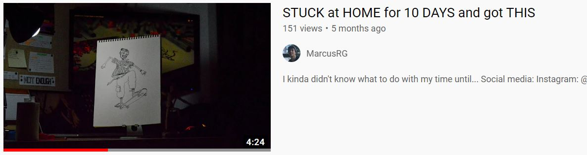
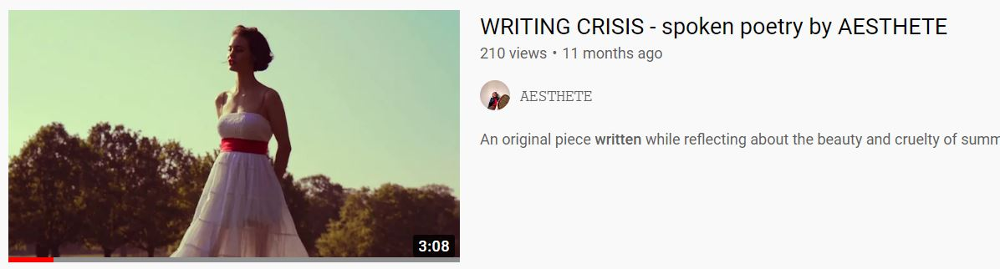
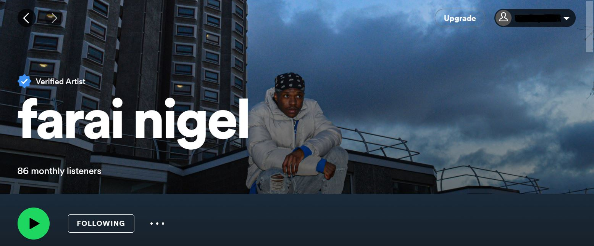

Mario Portillo Hernaiz
Filmmaking
"Marcus RG"
Marcus RG is my photography/filmmaking name. Filmming and editing videos has been my hobby since my photography skills started getting good. Recently I've been able to colaborate with people in their projects and also create a few filming projects for myself. Some of which are shown below.
  Watch videoPhotography
Before filming videos, I started taking photos for fun. After a few years trying things out, I made quite an improvement in my photography skills. Then during my first year at university I was able to meet incredible people, one of which was a rapper. He wanted to look more professional, so he asked me for a photoshoot. It ended up being a great photoshoot and he used my pictures on his Spotify artist profile.
 Check out artist